Билтен
Билтен
Техничкe школе "Колубара"

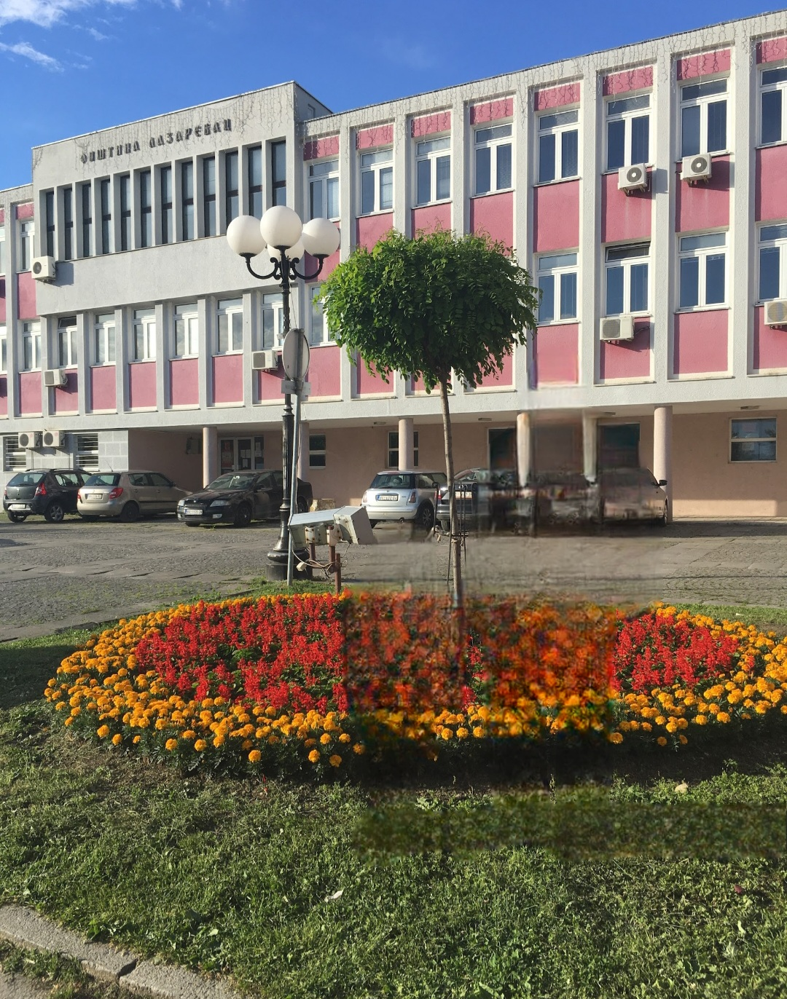
Лазаревац је један од најважнијих енергетских центара у Србији. Има развијену индустрију и рударство. Обилује богатим културним и спортско рекреативним садржајем. У историјском смислу познат је по Колубарској бици из Првог светског рата. Лазаревац је спој индустријског значаја и свакодневног живота са школама, културним установама и спортским садржајима.

Једна од најзначајнијих знаменитости Лазаревца се налази у самом центру, на узвишењу изнад пешачке зоне. У питању је надалеко чувена црква Светог великомученика Димитрија са Спомен костурницом која је изграђена у периоду 1938 – 1941.
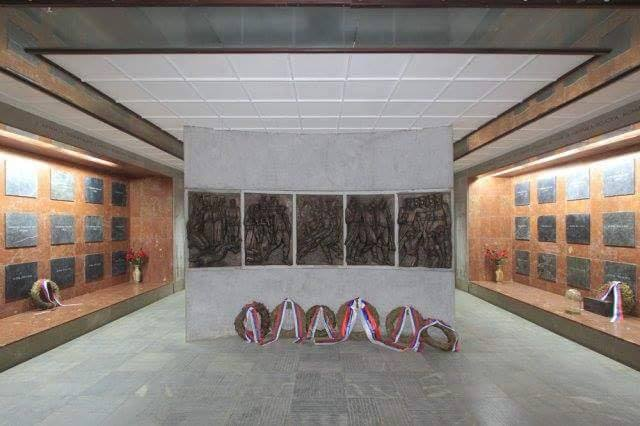
У питању је споменик посвећен сећању на огромне жртве које је наш народ преживео у I светском рату, тачније током чувене Колубарске битке која се одиграла у овим крајевима. У спомен крипти су похрањене кости огромног броја српских, али и аустроугарских војника настрадалих у Колубарској бици, што показује колико је болна историја Београда, али и величину срца нашег народа који је уз своје погинуле војнике сахранио и непријатељске.
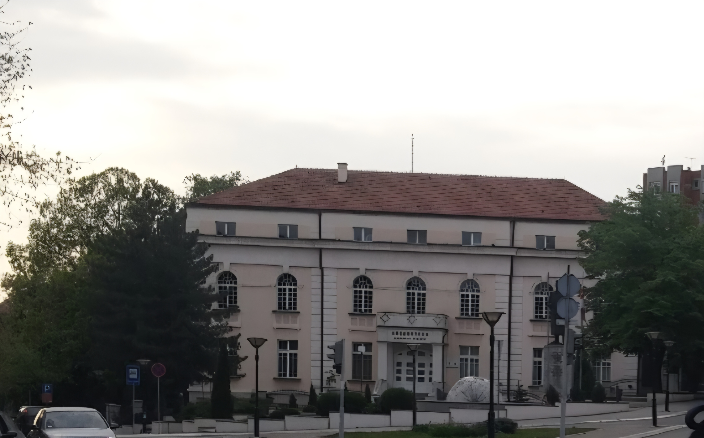
Градска библиотека у Лазаревцу је основана 1949. године, а за матичну библиотеку oпштине Лазаревац проглашена је 1966. године. Библиотека је касније преименована у библиотеку „Димитрије Туцовић”. Библиотека има дечије одељење, одељење за одрасле, одељење периодике, одељење стучног фонда и одељење за набавку и обраду, а њену мрежу огранака чине огранци у Великим Црљенима, Дудовици, Рудовцима док има заједничке библиотеке са основним школома у Јунковцу и Степојевцу.
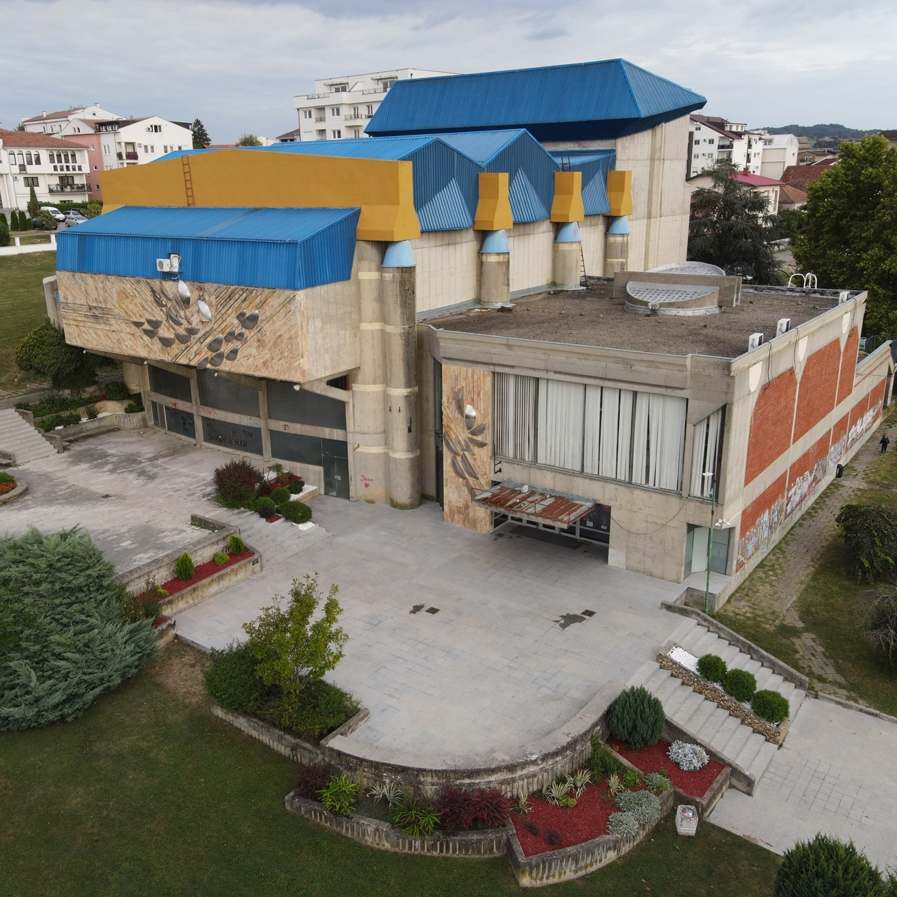
Центар за културу Лазаревац је установа културе од значаја за ГО Лазаревац. Са радом је отпочео 1977. године. Центар располаже објектом који се налази у Лазаревцу у ул. Хиландарска бр. 2, површине 2.745 м2 . Поседује универзалну дворану са 543 седишта, савремену глумачку гардеробу, изложбени простор (галерије "Симонида" и " Савременици"),балетску салу, као и остале пратеће просторије. У склопу Центра налази се Модерна галерија површине око 900 м² која је физички одвојена од Центра за културу. Смештена је на спрату тржно-информативног центра у пешацкој зони града, ул. Карађорђева 29. У галерији се налази стална поставка (Легат Лепосаве Лепе Перовић и Колекција "Савременици"), као и изложбени простор за текуће програме.
Прво приградско позориште - Пулс Театар је позориште у градској општини Лазаревац. Отворено је 13. Фебруара 2009. године, а ради у оквиру Центра за културу Лазаревац, на адреси Хиландарска 2, у самом центру Лазаревца, где у овиру репертоара има разнолику понуду представа дечије и вечерње сцене, као и многа гостовања како домаћих тако и регионалних позоришта.
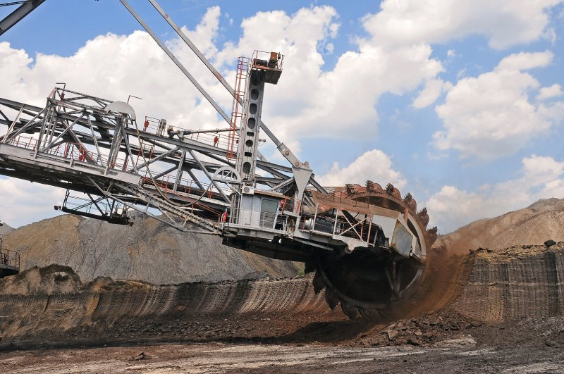
Колубара представља енергетско срце Србије. Идентитет и стабилност Лазаревца нераскидиво су повезани са експлоатацијом угља. Рударски басен “Колубара” производи око 70% угља у ЕПС-у, а из његовог лигнита добија се око 50% електричне енергије у земљи чиме га чини веома значајним енергетским центром за целу земљу.
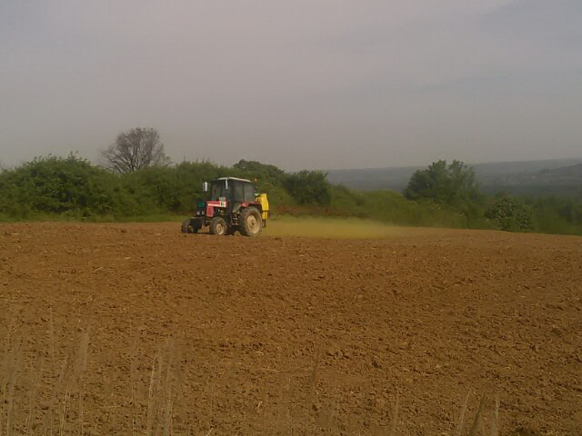
Упркос индустријском карактеру, пољопривреда је важна грана, посебно у руралним деловима општине. Воћарство (шљиве, лешници), виноградарство и пчеларство су у сталном успону. Пројекат „Качерски мед“ ради на заштити географског порекла и повећању вредности локалних пчеларских производа. Колубарска долина је веома плодна и омогоћава развој пољопривредних домаћинстава.
Лазаревац је значајан регионални образовни центар у Србији са развијеном мрежом од 3 основнe школе, 2 средње државне школе и основном и средњом музичком школом. У Лазаревцу постоји 6 сеоских основних школа (са својим подручним одељењима): ОШ „Диша Ђурђевић“ – Вреоци, ОШ „Рудовци“ – Рудовци, ОШ „Свети Сава“ – Велики Црљени, ОШ „Милорад Лабудовић Лабуд“ – Барошевац, ОШ „Слободан Пенезић Крцун“ – Јунковац, ОШ „Михаило Младеновић Сеља“ – Дудовица.
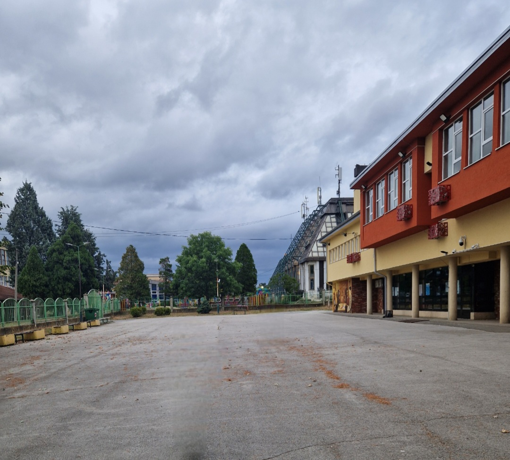
Најстарија основна школа у Лазаревцу је ОШ Војислав Вока Сваић.

Највећа школа у Лазаревцу је ОШ Дуле Караклајић.
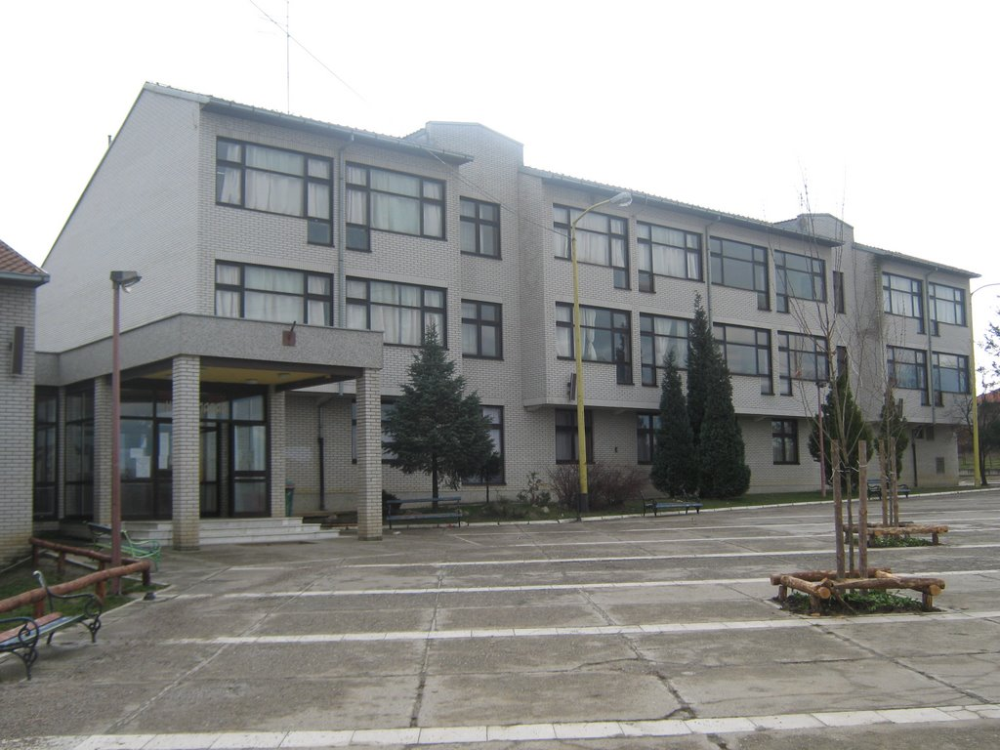
Најмлађа основна школа у Лaзаревцу је ОШ Кнез Лазар.
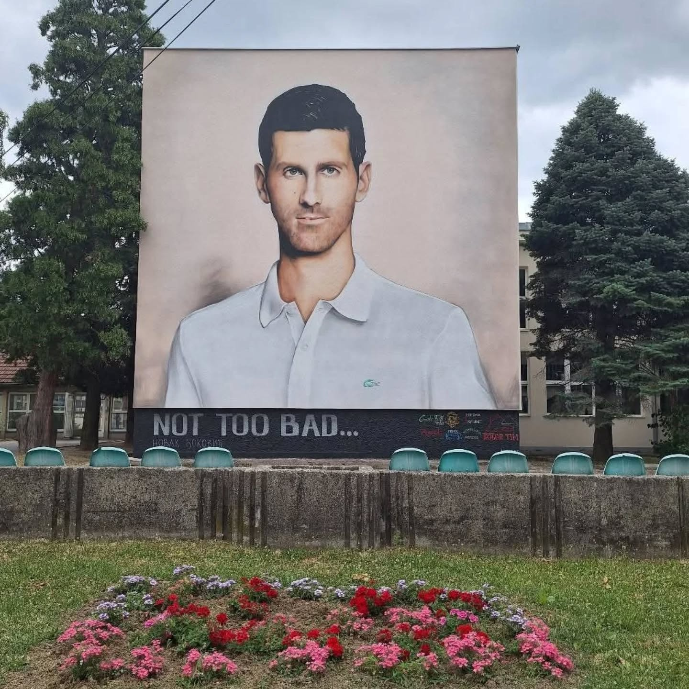
Tехничка школа "Колубара" је ваш домаћин на овогодишњем Регионалном такмичењу. Више о нашој школи можете прочитато ОВДЕ.
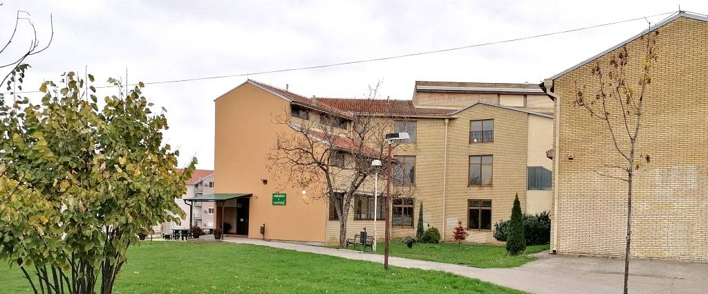
Гимназија у Лазаревцу је школа општеобразовног типа са дугом традицијом, основана 1945. године. Данас броји преко 500 ученика распоређених у 20 одељења.
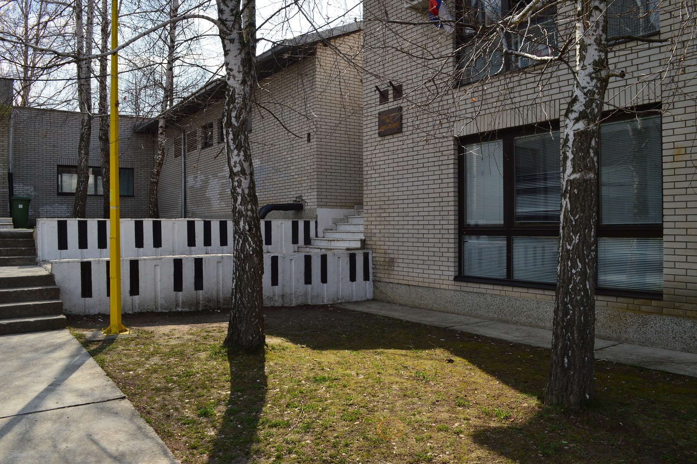
Музичка школа „Марко Тајчевић“ је образовна установа у Лазаревцу која пружа основно музичко образовање и васпитање. Ученицима је на располагању широк спектар инструмената и теоријских предмета, укључујући клавир, хармонику, виолину, гитару, флауту, кларинет и соло певање и друге инструменте.
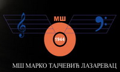
Средња музичка школа „Марко Тајчевић” у Лазаревцу почела је са радом 2007. године и нуди четворогодишње стручно образовање за талентоване ученике.
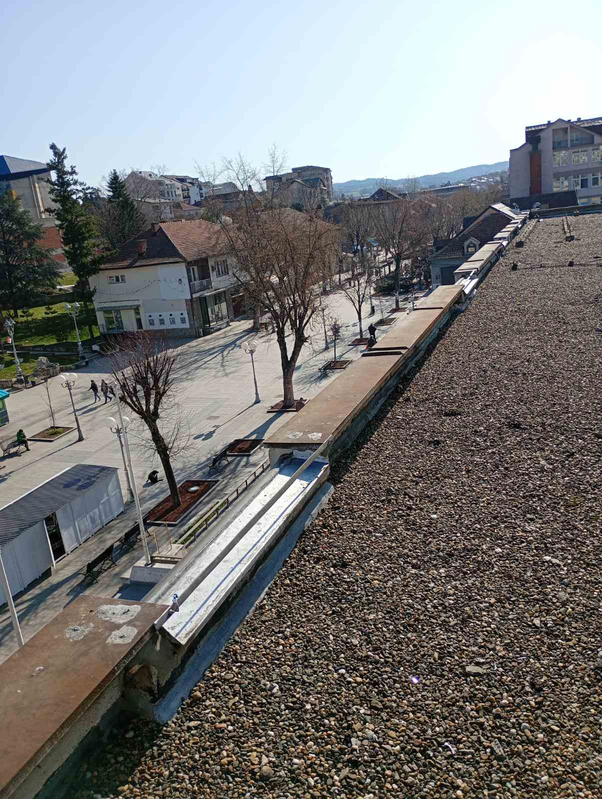
Главна улица у Лазаревцу, Карађорђева улица, највећим делом je пешачкa зонa. У главној улици се налази кафе-ресторан, велики број кафића и продавница за куповину. У свако доба године може се пронаћи разонода а најлепше је у њој проводити време лети и у пролеће.
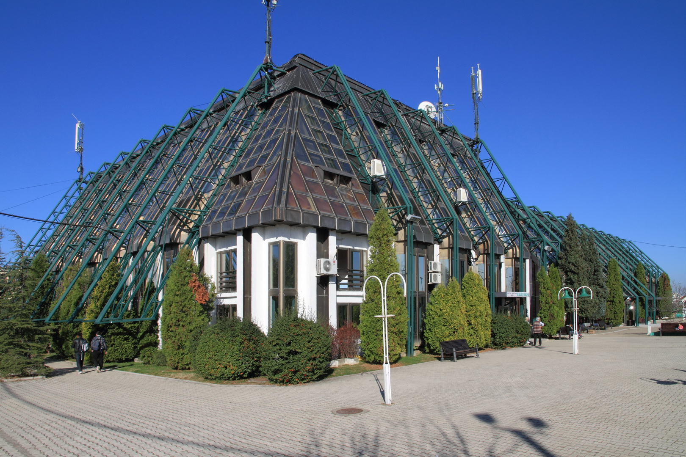
Спортско-рекреативни центар „Колубара“ (СРЦ Колубара) је главни спортски центар у Лазаревцу, који нуди разноврсне садржаје за професионалне спортисте и рекреативце. Поседује велику халу капацитета од 1.700 места за седење, затворени базен са сауном и парним купатилом, специјализоване сале, помоћну халу…
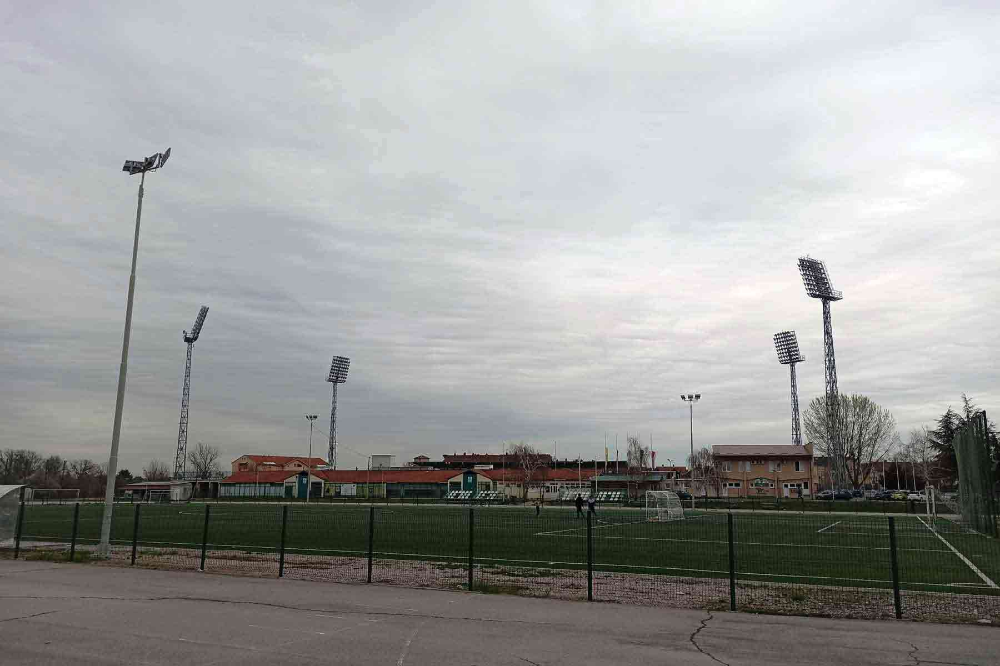
Лазаревац има и отворене терене. Атлетски стадион који је погодан за тренирање фудбала и атлетике. Терени за мале спортове: Постоје три асфалтна терена која се користе за кошарку, мали фудбал и рукомет. Тениски терени: На располагању су два тениска терена пресвучена тартан подлогом, који су осветљени и поседују зид за тренинг. Теретана на отвореном: У близини стаза налазе се и справе за вежбање на отвореном, које су доступне свим грађанима за бесплатан тренинг.
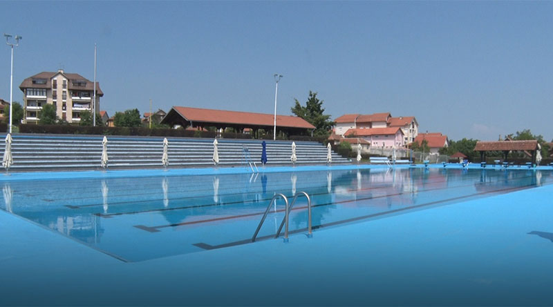
Отворени олимпијски базен у Лазаревцу ради у оквиру Спортско-рекреативног центра „Колубара“ и представља главно место за летње освежење у граду. Олимпијски базен је велики базен за пливаче са пратећим трибинама. Дечији базен је ањи базен намењен најмлађим посетиоцима. Кафић и ресторан у склопу комплекса ради угоститељски објекат који нуди пиће и храну.

Језеро Очага представља један од најпопуларнијих спортско-рекреативних центара у Лазаревцу, смештен уз Ибарску магистралу на око 60 км од Београда. Комплекс се састоји од два вештачка језера са специфичним наменама.
STOP SHOP Лазаревац је велики ритејл парк који нуди разноврсну понуду одеће, обуће, козметике и беле технике. Налази се на приступачној локацији са обезбеђеним великим бројем паркинг места.